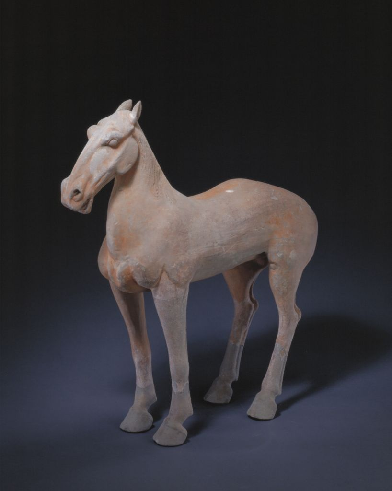

发布者：故宫博物院发布日期：20##-##-##阅读数：432
丝路长歌，千年回响，浩浩荡荡。2000多年前，我们的先辈怀揣和平友好的愿望，穿越草原沙漠，开辟出联通欧亚的陆上丝绸之路;不畏惊涛骇浪，闯荡出连接东西方的海上丝绸之路，孕育出"和平合作、开放包容、互学互鉴、互利共赢”的丝路精神，传承至今、历久弥新。

“一带一路”，穿云破雾，向阳而生。2013年秋，中国国家主席习近平在出访中亚和东南亚国家期间，提出共建”丝绸之路经济带”和"21世纪海上丝绸之路”的倡议。"一带一路”议从历史深处走来，将绵巨万里的千年丝路赋予全新内涵，秉持共商、共建、共享的理念，为沿线各国的发展与稳定提供新思路新途径、新平台，也是中国文明视角下对文明本质的准确把握，为人类文明交流互鉴提供崭新契机。
联合考古，恰逢其时，大道同行。"一带一路”倡议提出十年来，中国考古工作者的足迹遍布五洲四海，与哈萨克斯坦、阿联酋、乌兹别克斯坦等20余国家开展了40余项联合考古项目，诠释古今、问道西东，以联合考古共同探究人类文明起源和发展的历史脉络，共同续写文明交流互鉴的古今篇章文明因交流而多彩，文明因互鉴而丰富。2023年，"一带一路”倡议提出十周年，时间的蓄力叠加、文明的积淀起伏，考古发现见证彼此相依、文化并存十年来，跨山越海的联合考古，凝聚五洲四海的文化认知，描墓人类文明的生动画卷。独行快、众行远，"一带一路”联合考古让”合作共担”成为使命助力多样文化、多元文明在相互了解中相知相惜，在交流互鉴中激荡共鸣。 千年前，驼铃声声，在古丝绸之路的延展中将文明播撒世用:今日时，和风阵阵，在“一带一路”的发展中领路文明的多彩交融。探索未知、揭示本源和衷共济、汇流澄鉴，联合考古必将为持续践行”全球文明倡议”发挥融通作用，为高质量共建"一带一路平添文化张力，为推动构建人类命运共同体开启文
